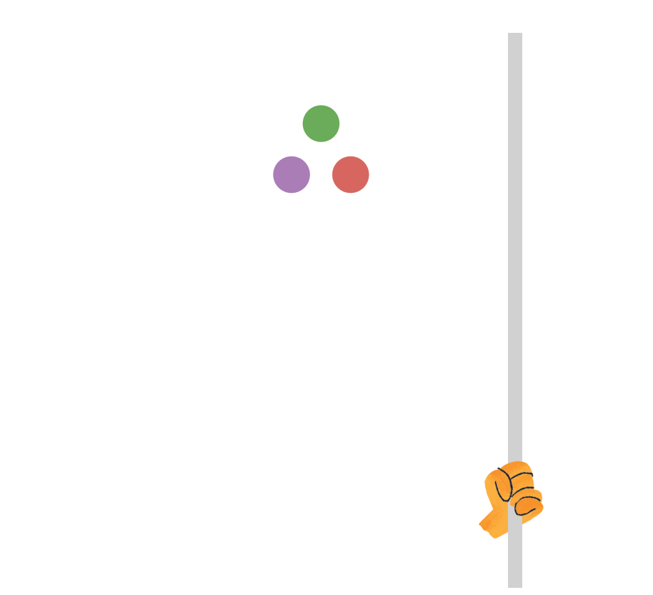
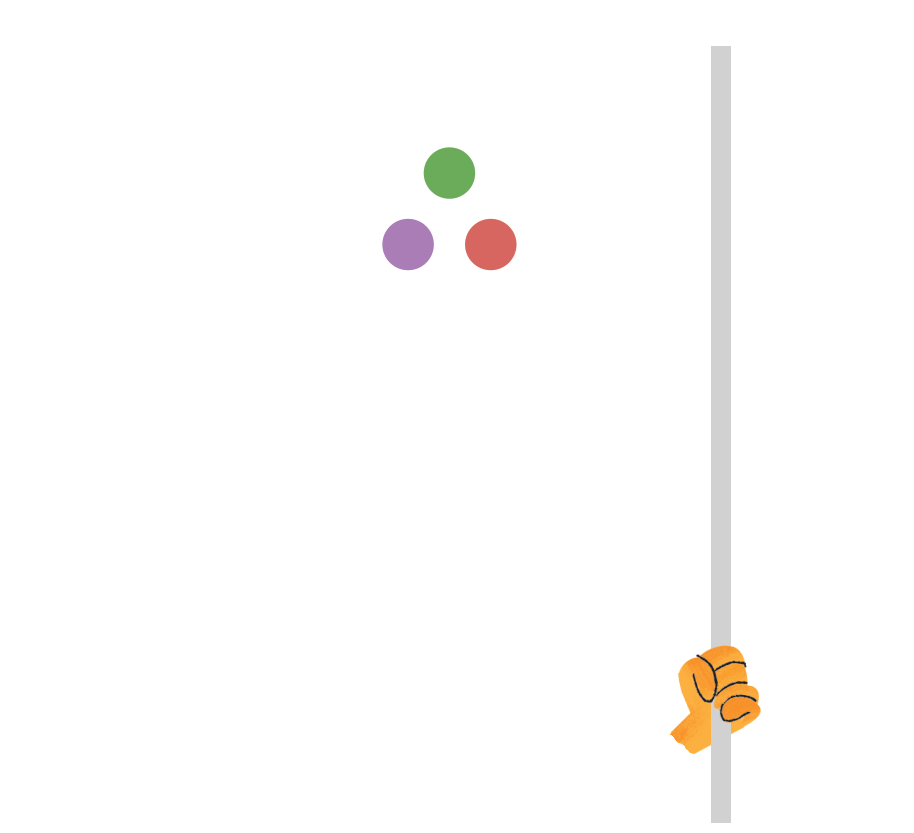

JuliaCon 2016


Please see here for Tuesday workshop schedule.
Most talks are 30 minutes long (plus 5 minutes for questions).
⚡ denotes a lightning talk. These talks are 8 minutes long (plus 2 minutes for questions).
 
